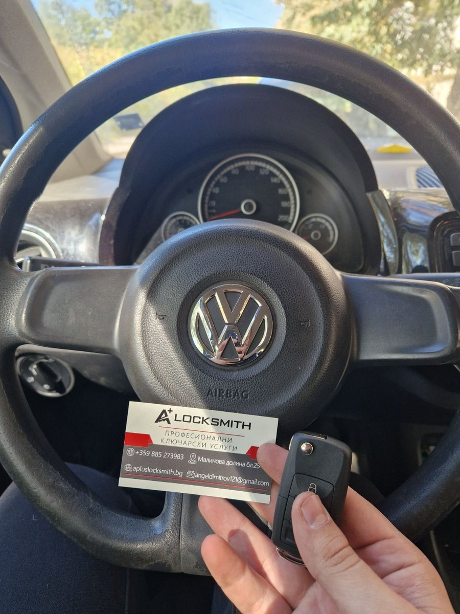
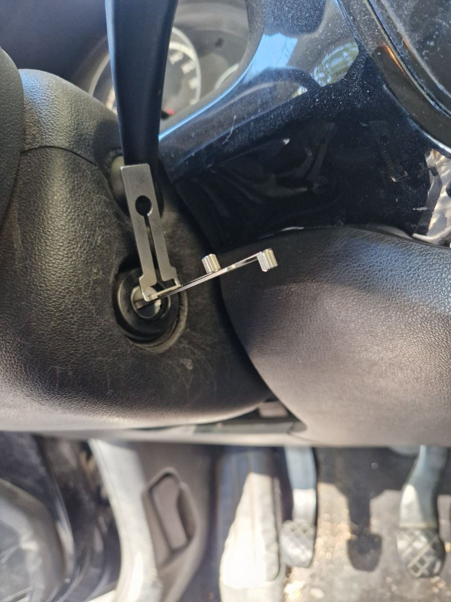

Изгубен ключ за VW Up (2012) — изработка на място за под час
Volkswagen Up от 2012 с табло Magneti Marelli. Модел, при който бързането струва скъпо, а грешната стъпка изважда от строя неща, които нямат нищо общо с ключа. Колата тръгна за под час, без да мръдне от мястото си.


Накратко: Volkswagen Up от 2012 с табло Magneti Marelli на UDS платформа. Изработихме нов ключ с криптиран транспондер ID48 CAN, блейд HU66, нарязан по код, разчетен с декодер Lishi, и дистанционно, подбрано по собствения му каталожен номер. Всичко на адреса, за под час, без репатрак.
Случаят
Собственикът остана без работещ ключ за колата си. Обичайният път при такъв случай минава през репатрак и чакане; ние отидохме при автомобила и той не мръдна от мястото си.
Този модел обаче не е от най-лесните, и е честно да се каже защо.
Защо Up-ът не е рутинна работа
Таблото Magneti Marelli и UDS платформата
При тези автомобили имобилайзерът не е отделен модул — той живее в самото табло. Достъпът до него минава по протокола UDS, със защитена последователност, която трябва да бъде спазена дословно.
Тук е и капанът: при грешна или прекъсната процедура проблемът не е, че ключът няма да се запише. Проблемът е, че таблото може да остане в състояние, от което се излиза трудно и скъпо. Разликата между „не стана“ и „сега имаме втори проблем“ е една пропусната стъпка.
Криптираният чип ID48 CAN
Транспондерът ID48 не се копира. Той трябва да бъде изчислен и записан към конкретната кола, а обменът минава по вътрешната мрежа на автомобила. Затова купена отнякъде заготовка с чип не върши работа сама по себе си — без правилното записване тя си остава парче пластмаса с метал.
Рискът, който рядко се споменава: ABS кодирането
При работа по тези табла съществува реална опасност да бъде изгубено кодирането на ABS. Резултатът е светнала лампа и система, която после трябва да се възстановява отделно — тоест клиентът идва с един проблем, а си тръгва с два.
Това не е страшилище, а причина за ред. Знае ли се къде е рискът, той се заобикаля. Не се ли знае — се научава на гърба на клиента.
Механичната част: HU66 по разчетен секрет
Без наличен оригинал няма откъде да се вземе готов код. Затова го извадихме от там, където винаги го има — от самата ключалка. Секретът ѝ се разчита на място с декодер Lishi, без разглобяване и без повреда по контактната група.
По този код нарязахме блейд HU66 с автоматична машина, директно при автомобила. Рязането по код, а не по копие, има и практическо предимство: връща фабричните размери на каналите, вместо да наследи износването на стария ключ. Затова новоизработеният ключ често върви по-гладко от този, с който колата е живяла години.
Дистанционното — по каталожен номер
Външно еднакви дистанционни се различават по честота и по вътрешна електроника. Затова дистанционното се подбира по собствения си каталожен номер, а не на око. По външен вид се бърка лесно, а сгрешеното дистанционно просто не се записва — и това се разбира чак накрая, когато времето вече е загубено.
Как цялото това се побира в един час
Няма пропуснати стъпки. Има подготовка, която е свършена, преди телефонът да звънне.
- Актуално оборудване. Професионални платформи с актуален софтуер и валидни лицензи, които познават тези табла и спазват процедурата им. Плюс автоматична машина за рязане, която пътува с нас и работи по декодиран код на място.
- Над десетилетие практика на терен. Опитът не се вижда в сметката за време, а в липсата на лутане — още по телефона става ясно кой е пътят за този модел и къде се засича.
- Склад. Правилният блейд, правилният чип и дистанционното с правилния каталожен номер са налични в момента на обаждането. Голяма част от случаите, в които клиент чака дни, чака доставка, не процедура.
- Мобилност. Оборудването отива при колата. Отпада цяла стъпка от веригата.
Защо тази работа отнема време изобщо — разписали сме го другаде.
Какво получи клиентът
- Напълно нов работещ ключ — механика, имобилайзер и дистанционно.
- Работа на адреса, без репатрак и без местене на автомобила.
- Запазено ABS кодиране и табло, по което не е останала следа от намесата.
- Проверка на място преди да си тръгнем — колата пали, заключва и отключва.
Подобни случаи сме решавали и на Kia Niro, Toyota Corolla и Toyota Sequoia, а при по-новите защитени системи — на BMW със система BDC.
Често задавани въпроси
Колко време отнема изработката на ключ за VW Up?
При подготвена работа — под час на място. Времето зависи от това дали има наличен работещ ключ, от състоянието на контактната ключалка и от поколението на таблото. При този Volkswagen Up всичко се побра в рамките на един час, включително проверката накрая.
Какво е UDS платформа и защо има значение?
UDS е протоколът, по който съвременните табла на концерна комуникират със света. При тези коли имобилайзерът живее в самото табло, не в отделен модул, и достъпът до него минава през защитена последователност. Инструмент, който не я спазва точно, не просто не успява — може да остави таблото в състояние, от което се излиза трудно.
Какво е чип ID48 CAN?
ID48 е криптираният транспондер, с който работи концернът, а „CAN“ означава, че обменът минава по вътрешната мрежа на автомобила. Чипът не може да бъде просто копиран — той трябва да бъде изчислен и записан към конкретната кола, което е и причината заготовката сама по себе си да не върши работа.
Може ли да се направи ключ без наличен оригинал?
Да. Без наличен ключ секретът на ключалката се разчита на място с декодер, а електронната част минава през таблото. Това е по-дълбока работа от добавянето на втори ключ, но е изпълнима на адреса, без теглене до сервиз.
Какво е HU66 и защо се реже по разчетен код, а не по копие?
HU66 е профилът на блейда при концерна. Рязането по код възпроизвежда фабричните размери на каналите, докато копието наследява износването на стария ключ. Затова новият ключ често върви по-гладко от оригинала, с който е живяла колата.
Защо дистанционното се избира по каталожен номер?
Защото външно еднакви дистанционни се различават по честота и вътрешна електроника. Каталожният номер на самото дистанционно е единственото, което гарантира съответствие — по външен вид се бърка лесно, а сгрешеното дистанционно просто не се записва.
Вярно ли е, че при такава работа може да се загуби кодирането на ABS?
Рискът е реален при работа по тези табла, ако процедурата не е спазена. Загубено кодиране на ABS означава светнала лампа и система, която трябва да бъде възстановена отделно — тоест втори проблем върху първия. Затова подготовката преди започване е по-важна от скоростта.
Трябва ли колата да се кара до вас?
Не. Цялата работа — разчитането на секрета, рязането и записването на ключа — се върши на адреса, на който е автомобилът. Режем блейда на място с автоматична машина, вместо да се връщаме до ателието.
Какви документи ще поискате?
Документ за собственост на автомобила и лична карта. Това е задължително условие и е във ваша полза — същата проверка пази вашата кола от това някой друг да си поръча ключ за нея.
Имате подобен случай?
Обадете се за оглед или консултация — работим в София с посещение на адрес.